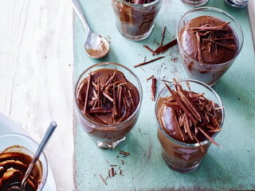
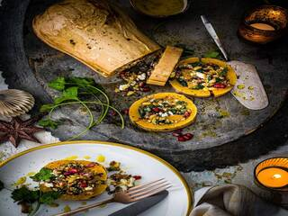

Autumnal Soups
Sweet potato & rosemary soup
with garlic toasts
Monday 16th November 2020

Ingredients
- 2 tsp olive oil , plus extra for brushing
- 1 onion , chopped
- 3 garlic cloves
- 750g sweet potato , peeled and cubed
- 1l vegetable stock
- 2 rosemary sprigs
- 8 slices bread (ciabatta is good)
Method
- Heat the oil in a large saucepan, then fry the onion until soft. Crush 2 garlic cloves, add to the onion, then fry for 1 min more. Stir in the sweet potato, then cover with the stock and bring to the boil. Strip the leaves from one of the rosemary sprigs, then add to the pan. Simmer for 10 mins until the potato is soft.
- Meanwhile, heat oven to 200C/ fan 180C/gas 6. Place the bread on a baking sheet, then brush with olive oil. Slice the remaining garlic clove in half, then rub the cut side over the bread along with the leaves from the second rosemary sprig. Season, then bake for 10 mins until crisp and golden.
- Use a hand blender to roughly purée the soup, adding a splash of hot water if it seems too thick. Season well, then pour into warmed bowls and serve with the toasts.
This recipe can be found here: Sweet Potato & Rosemary Soup
Lentil and Cardamon Soup
Monday 16th November 2020

Cheap and cheerful red lentils are jazzed up with coconut milk and plenty of spices in this quick and warming soup recipe
Ingredients
- 3 cups almonds
- 1 large onion , finely chopped
- 2 fat garlic cloves , crushed
- 1 large carrot , finely chopped
- thumb-sized piece of ginger , peeled and finely chopped
- 2 tbsp oil , sunflower, rapeseed or groundnut all work well
- ½ tsp turmeric
- seeds from 10 cardamom pods
- 1 tsp cumin , seeds or ground
- 100g red lentils
- 400ml can light coconut milk
- zest and juice 1 lemon
- pinch of chilli flakes
- handful of parsley or coriander, chopped
Method
- Put the onion, garlic, carrot and ginger into a saucepan, drizzle over the oil, and cook for a few mins to soften. Add the turmeric, cardamom and cumin. Stir well to combine, and cook gently for a few mins more, until the spices are aromatic.
- Add the lentils to the pan. Pour over the coconut milk, fill the can with water and add this too. Bring to the boil, then reduce to a simmer for 15 mins until the lentils are soft and swollen but retain a little bite. Using a hand blender, pulse the soup until some is blended completely, leaving some larger vegetable chunks.
- Zest the lemon straight into the pan, then squeeze the juice over the soup and stir through with a pinch of salt, chilli and finely chopped herbs. Ladle into bowls and sprinkle over a little more lemon zest, if you like.
This recipe can be found here: Lentil and Cardamon Soup

Wrap up warm with a delicious autumnal soup

Treat yourself without feeling guilty, tuck in to guilt-free desserts

Christmas recipe inspiration!